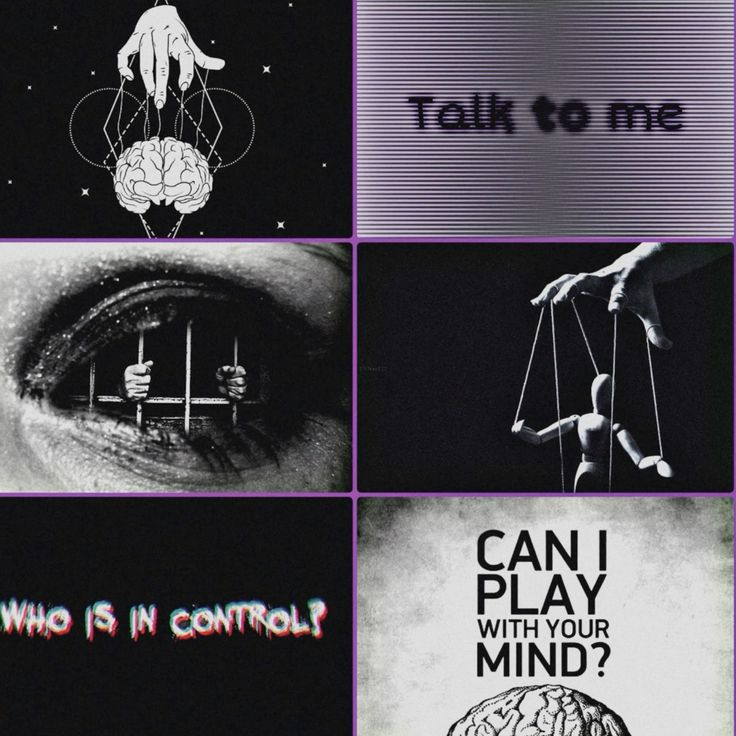

01
The Communication Process
Understand how messages are sent, interpreted, and affected by context, assumptions, and feedback.

LEARNING PATH
Build stronger communication through listening, questions, assertiveness, and conflict skills.
Move through the lessons in order, take notes, and test your understanding with reflection and knowledge checks.
CURRICULUM
Understand how messages are sent, interpreted, and affected by context, assumptions, and feedback.
Practice focusing on the speaker, checking understanding, and responding to the meaning behind the words.
Use open, respectful, and specific questions to invite clarity instead of making assumptions.
Explore facial expression, gesture, posture, and tone while remembering that nonverbal cues are context-dependent.
Learn to express needs and opinions clearly while respecting other people’s rights and perspectives.
Prepare for sensitive discussions with a clear purpose, specific examples, curiosity, and emotional regulation.
Explore how listening, identifying shared goals, and agreeing on practical next steps can reduce conflict.
Identify how ambiguity, assumptions, timing, and missing context can cause messages to be misunderstood.
Consider how brevity, delay, tone ambiguity, and audience affect communication in digital spaces.
Educational note: Human behavior is complex. These lessons are intended to build understanding and critical thinking, not to diagnose people or provide instructions for exploiting them.